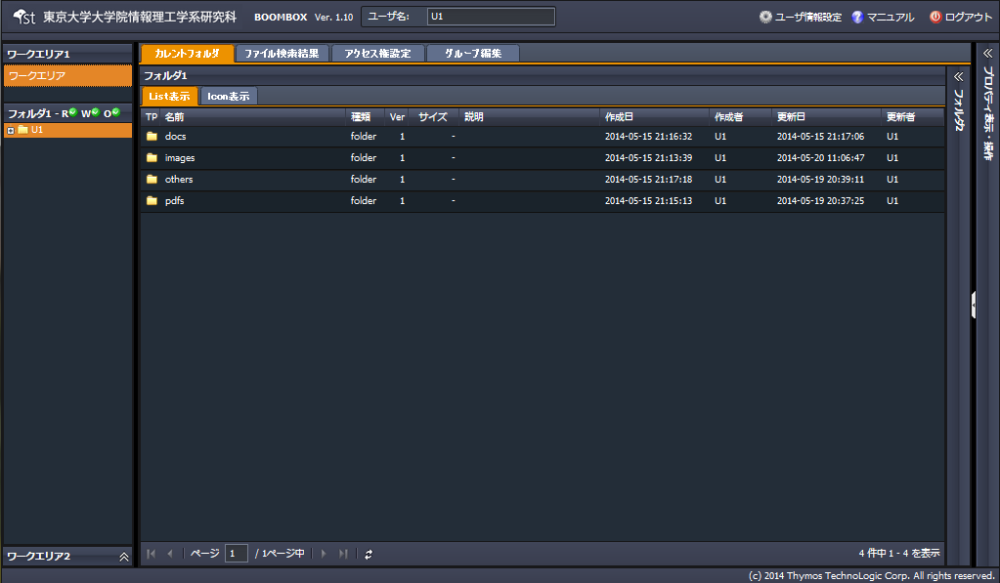
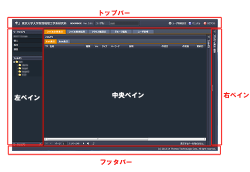

SecretFilesマニュアル
3. SecretFilesサービス(解説編)
ログインに成功すると、画面が切り替わり、本サービスがスタートします。

3.1 基本画面構成
ここでは、SecretFilesサービスで使用する画面についてご説明します。
画面は次のように構成されています。

詳しくは、「3.2 各ペインの説明」をお読みください。
(* ペインとは、目的に応じて表示する画面内の区画のことをさします。)
また、操作中、マウスボタンを左クリックしたり、右クリックしたりした場合には、そのクリックした場所や操作の内容に応じて新たなペインを表示したり、ポップアップウィンドウを表示したり、コンテクストメニューを表示したり、あるいはメッセージを表示したりします。
隠れているペインの表示
(画像: ワークエリア2の箇所と中央ペインのワークエリア2側の表示およびプロパティペイン)
タブ
(画像: ファイルリスト全体表示の箇所とプロパティペイン)
ポップアップウィンドウ
(画像: ユーザ情報設定)
コンテクストメニュー
(画像: フォルダツリーで右クリック)
アラート(ポップアップメッセージ)
(画像: 処理実行後のエラーメッセージ)